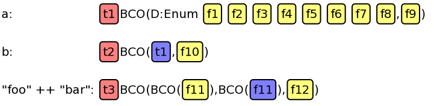
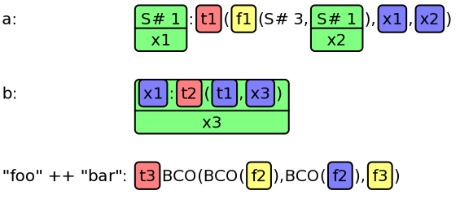
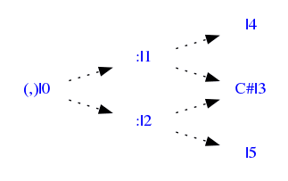
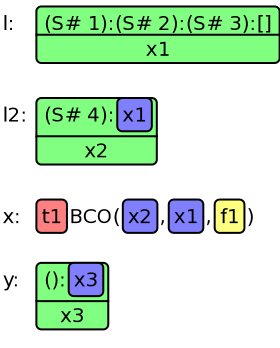

ghc-vis is a tool to visualize live Haskell data structures in GHCi. Evaluation is not forced and you can interact with the visualized data structures. This allows seeing Haskell’s lazy evaluation and sharing in action.
Introduction
Functional programming languages like Haskell offer a way to write well-structured software, which is easy to understand and still performs well. In order to achieve this one has to be able to consciously use features that result from the paradigm of functional programming.
ghc-vis is a tool for visualizing two features of this kind, namely lazy evaluation and sharing, in a way that can be used in the (self-)teaching of Haskell and the development and debugging of Haskell software.
A common example for the power of lazy evaluation are infinite data structures. They are easy to define and convenient to use in Haskell. We can write
ones = [1,1..]
to construct an infinite list of 1s, which we can now access by the suggestive name ones. How does this work? Clearly the entire list can’t be stored in memory as we do not possess the infinite tape of a turing machine.
We can write a function to retrieve the nth member of a list:
at 0 (x:xs) = x at n (x:xs) = at (n-1) xs
Evaluating at 1 ones extracts the second member of the list ones, which gives us the integer 1. In the same manner at 2 ones and at 3 ones give us 1. But what is happening to the infinite list of ones as we access its members?
After at 1 ones: |
After at 2 ones: |
After at 3 ones: |
|
|
|
This time no big list is constructed in memory, instead a list is created that references itself as the rest of the list.
Basic usage
Installation
The package is available on Hackage. Install it like this:
$ cabal install ghc-visFollow the instructions in the output of cabal install ghc-vis to setup the
ghci script.
You need GTK, Cairo, Pango, Graphviz and their corresponding Haskell library bindings. If you run into any problems, try this:
$ cabal update
$ cabal install gtk2hs-buildtoolsAnother common problem is library profiling, which is not supported by
ghc-vis. You can disable it globally in your cabal config by setting
library-profiling to False in ~/.cabal/config. If you only want to
install ghc-vis without library profiling run the following:
$ cabal install ghc-vis --disable-library-profilingInteractive Usage
Now you can run ghci and experiment with ghc-vis. Start the visualization:
$ ghci
GHCi, version 7.6.3: http://www.haskell.org/ghc/ :? for help
λ> :visA window should appear now. This is the visualization window:

Add an expression to the visualization:
λ> let a = [1..3]
λ> :view a
λ> let b = cycle a
λ> :view b
λ> :view "foo" ++ "bar"You should now see something similar to this:

Thunks are red, Functions are yellow, named objects are green and links to an already shown object are blue.
Notice how a is referenced by b.
Evaluate an object that is shown in the visualization. You can also click on the object to evaluate it. Only thunks, which are named starting with a t, can be evaluated.
λ> :eval t2
The first element of b has been evaluated. We see that it’s a reference to the value that’s also referenced in a, as they share the same name "b0". "S# 1" stands for the Integer data constructor, which is called S# in GHC and its argument 1.
Switch between the list view and the graph view:
λ> :switch
When an object is updated by accessing it, you have to call :update to
refresh the visualization window. You can also click on an object to force an
update:
λ> a !! 2
3
λ> :update
Clear the visualization window, this also happens when you :load or
:reload a source file:
λ> :clearOther Tools
The GHCi Debugger has an integrated :print command that inspects data
structures at runtime. Evaluation is not forced, so there are no side effects.
$ ghci
GHCi, version 7.6.3: http://www.haskell.org/ghc/ :? for help
λ> let a = [1..3]
λ> :print a
a = (_t1::[Integer])
λ> head a
1
λ> :print a
a = 1 : (_t2::[Integer])
λ> head $ tail a
2
λ> :print a
a = 1 : 2 : (_t3::[Integer])
λ> a
[1,2,3]
λ> :print a
a = [1,2,3]
λ> let b = a ++ a
λ> head b
1
λ> :print b
b = 1 : (_t3::[Integer])
λ> b
[1,2,3,1,2,3]
λ> :print b
b = [1,2,3,1,2,3]These data structures reside on the GHC heap. We can see that expressions are
only evaluated once they are needed. This is called lazy evaluation. To avoid
unnecessary copies of objects on the heap a heap object can be referenced
multiple times instead of being copied into a new location. This is called
sharing. We can see that :print does not tell us how b is sharing values
with a or within itself.
vacuum-cairo
Vacuum-cairo on the other hand does tell us how values are shared within b:
λ> System.Vacuum.Cairo.view bThe following window appears on the screen:

But vacuum-cairo evaluates the data structure fully before showing it. So we can’t use it to see how data structures are lazily evaluated in Haskell.
Additionally Vacuum-cairo is unable to visualize sharing between different data structures, like a and b in this case, as only one data structure can be viewed at any time. We would have to combine the data structures into one to see which values are referenced in both.
When we use vacuum (and vacuum-graphviz) directly we can inspect data structures without evaluating them:
λ> let a = "foo"
λ> let b = a ++ a
λ> head b
'f'
λ> GHC.Vacuum.GraphViz.graphToDotFile "vacuum2" Data.GraphViz.Commands.Png $
GHC.Vacuum.nameGraph (GHC.Vacuum.vacuumLazy (a,b))
We can see that the value "C#l3" is referenced both in a and b. That’s the 'f'. What we can’t see is that the l5 thunk references a and has another value shared with a.
What we’d like to see is something like this, which is what ghc-vis outputs:
More Examples
Fibonacci Numbers
Let’s consider a function f that calculates fibonacci numbers:
λ> let f = 0 : 1 : zipWith (+) f (tail f)
λ> :switch
λ> f !! 2
1
λ> :view f
λ> f !! 3
1
λ> :update
λ> f !! 4
2
λ> :updateAfter f !! 2: |
After f !! 3: |
After f !! 4: |
|
|
|
Interpreted and Compiled Code
Interpreted and compiled code may looks very different when evaluating. First
an example of interpreted code, -fbyte-code is the default in GHCi if the
code hasn’t been compiled already:
λ> :set -fbyte-code
λ> :!cat Sieve.hs
module Sieve where
primes = sieve [2..] where sieve (p:xs) = p : sieve [x | x <- xs, x `mod` p > 0]
λ> :l Sieve
[1 of 1] Compiling Sieve ( Sieve.hs, interpreted )
Ok, modules loaded: Sieve.
λ> head primes
2
λ> :switch
λ> :view primes
The view is rather confusing as a lot of type class information is included. Let’s look at compiled object code:
λ> :set -fobject-code
λ> :l Sieve
[1 of 1] Compiling Sieve ( Sieve.hs, Sieve.o )
Ok, modules loaded: Sieve.
λ> head primes
2
λ> :switch
λ> :view primes
Simple Lists
λ> let l = [1,2,3]
λ> :view l
λ> let l2 = 4:l
λ> :view l2
λ> let x = l ++ l2
λ> :view x
λ> let y = id (:) () y
λ> :view y
λ> :eval t1
λ> :switch |
|
Binary Tree
λ> data BinaryTree = BT BinaryTree Int BinaryTree | Leaf
λ> let x = BT (BT (BT Leaf 1 (BT Leaf 2 Leaf)) 3 (BT (BT Leaf 4 (BT Leaf 5 Leaf)) 6 Leaf)) 7 Leaf
λ> :view x
λ> :switch
Double Linked Lists
A working cyclic double linked list: dll.hs
λ> :l dll.hs
λ> let x = mkDList [1..4]
λ> :view x
λ> :switch
A non-working cyclic double linked list: dll2.hs New list elements get created all the time instead of referencing the existing ones.
λ> :l dll2.hs
λ> let x = mkDList [1..4]
λ> :view x
λ> :switch
IntMap
λ> :view (Data.IntMap.fromList $ zip [1..10] [1..])
λ> :eval t0
λ> :switch
ByteString
λ> let a = Data.ByteString.pack [0x44,0x45,0x46]
λ> :view a
λ> let b = Data.ByteString.append a a
λ> :view b
λ> :switch
λ> a
"DEF"
λ> :update
Array
λ> let b = GHC.Arr.array ((1,1),(3,2)) [((1,1),42),((1,2),23),((2,1),999),((2,2),1000),((3,1),1001),((3,2),1002)]
λ> b
array ((1,1),(3,2)) [((1,1),42),((1,2),23),((2,1),999),((2,2),1000),((3,1),1001),((3,2),1002)]
λ> :view b
λ> :switch
Combined with GHCi’s Debugger
ghc-vis can be used to watch data structures while a computation is inspected using GHCi’s debugger:
Download Video: debugger.mp4, debugger.webm
Symbol Explanations and Commands
These objects are used in GHCi:
| Name | Graph View | List View | Explanation |
|---|---|---|---|
Thunk |
Thunk |
t0 |
Unevaluated value |
General Application |
AP |
t0 |
Unevaluated value (mostly used in interpreted code) |
Function |
Fun |
f0 |
Function applied to less parameters than it takes (possibly 0) |
Partial Application |
PAP |
f0 |
Function applied to less parameters than it takes (mostly used in interpreted code) |
Commands are executed on the GHCi command line:
| Command | Action |
|---|---|
|
Run the visualization window |
|
Run the minimal visualization window |
|
Add the Haskell expression x to the visualization window |
|
Force evaluation to WHNF of the thunk named t |
|
Switch between the visualization types (list, graph) |
|
Update the visualization window, in case an expression has changed |
|
Remove all visualized expressions |
|
Restore all hidden nodes |
|
Go back in history |
|
Go forward in history |
|
Export the current visualization to a file; SVG, PDF, PS and PNG supported |
Key and Mouse Bindings
Key and mouse bindings work in the visualization window:
| Keys | Mouse | Action | ||
|---|---|---|---|---|
v |
Switch view |
|||
c |
Clear view |
|||
C |
Restore hidden nodes |
|||
u |
Update view |
|||
Enter, |
Space, |
Left click |
Evaluate and update |
|
, |
Go back in history |
|||
. |
Go forward in history |
|||
Right click and drag |
Move |
|||
Left, |
h, |
a |
Move left |
|
H, |
A |
Move left fast |
||
Right, |
l, |
d |
Move right |
|
L, |
D |
Move right fast |
||
Up, |
k, |
w |
Move up |
|
K, |
W |
Move up fast |
||
Down, |
j, |
s |
Move down |
|
J, |
S |
Move down fast |
||
\+, |
PageUp |
Wheel up |
Zoom in |
|
-, |
PageDown |
Wheel down |
Zoom out |
|
0, |
= |
Wheel click |
Reset zoom and position |
|
Using ghc-vis as a Library
Although ghc-vis is meant to be used in GHCi it can also be used as a library
in regular Haskell programs which are run or compiled by GHC. You can run
those programs using runghc example.hs or ghc -threaded example.hs &&
./example. Without the -threaded-Flag ghc-vis does not work correctly. This
is an example using ghc-vis outside of GHCi:
import GHC.Vis main = do let a = "teeest" let b = [1..3] let c = b ++ b let d = [1..] putStrLn $ show $ d !! 1 vis view a "a" view b "b" view c "c" view d "d" getChar switch getChar
Thesis
ghc-vis was developed as part of my Bachelor Thesis titled Visualization of Lazy Evaluation and Sharing. It contains some more examples, explains how it works and what kind of problems I encountered.
Bugs, Feature Requests, Development
If you have any problems, new ideas or comments concerning ghc-vis, just drop me an email. I’ll be glad to help you.